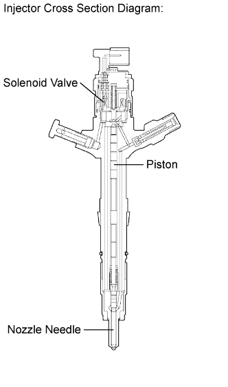

DTC P1238 Injector Malfunction |

| DTC Detection Drive Pattern | DTC Detection Condition | Main Trouble Area | Related Trouble Area |
| Warm up the engine and idle it for 60 seconds | A large engine speed fluctuation when idling continues for 60 seconds (2 trip detection logic). |
|
|
| DTC No. | Data List |
| P1238 |
|
| 1.CHECK ANY OTHER DTCS OUTPUT (IN ADDITION TO DTC P1238) |
Connect the intelligent tester to the DLC3.
Turn the engine switch on (IG) and turn the tester on.
Enter the following menus: Powertrain / Engine / DTC.
Read the DTCs.
| Result | Proceed to |
| P1238 is output | A |
| P1238 and other DTCs are output | B |
|
| ||||
| A | |
| 2.CHECK HARNESS AND CONNECTOR (ENGINE WIRE HARNESS) |
Check the wire harness and connector connections.
|
| ||||
| OK | |
| 3.READ VALUE USING INTELLIGENT TESTER (COMPENSATORY INJECTION VOLUME FOR EACH CYLINDER) |
Connect the intelligent tester to the DLC3.
Turn the engine switch on (IG) and turn the tester on.
Start the engine and warm it up (engine coolant temperature is 75°C (167°F) or more), and then idle the engine for 1 minute or more.
Enter the following menus: Powertrain / Engine / Data List / Injection Feedback Val #1 to #8.
Read the value.
Any cylinders that have a higher compensatory injection volume than shown above are considered to be faulty. Use the following steps to inspect and repair the cylinders.
| NEXT | |
| 4.PERFORM ACTIVE TEST USING INTELLIGENT TESTER (FUEL CUT FOR IDENTIFYING MALFUNCTION CYLINDER) |
Connect the intelligent tester to the DLC3.
Start the engine and turn the tester on.
Enter the following menus: Powertrain / Engine / Active Test / Control the Cylinder #1 to #8 Fuel Cut.
Check the 8 cylinders in sequence to identify a faulty cylinder by performing the power-balance inspection.
| NEXT | |
| 5.CHECK CYLINDER COMPRESSION PRESSURE OF MALFUNCTIONING CYLINDER |
Check the cylinder compression pressure (Click here).
|
| ||||
| OK | |
| 6.REPLACE FUEL INJECTOR |
Replace the fuel injector (Click here).
| NEXT | |
| 7.CHECK WHETHER DTC OUTPUT RECURS (DTC P1238) |
Connect the intelligent tester to the DLC3.
Turn the engine switch on (IG) and turn the tester on.
Clear the DTCs (Click here).
Turn the engine switch off.
Start the engine.
Switch the ECM from normal mode to check mode (Click here).
Warm up the engine (engine coolant temperature is 75°C (167°F) or more) and idle it for 60 seconds.
Enter the following menus: Powertrain / Engine / DTC.
Read the DTCs.
| Result | Proceed to |
| P1238 is output | A |
| No DTC is output | B |
|
| ||||
| A | |
| 8.REPLACE ECM |
Replace the ECM (Click here).
|
| ||||
| 9.REPAIR OR REPLACE HARNESS OR CONNECTOR |
|
| ||||
| 10.CHECK ENGINE TO DETERMINE CAUSE OF LOW COMPRESSION |
| NEXT | |
| 11.CONFIRM WHETHER MALFUNCTION HAS BEEN SUCCESSFULLY REPAIRED |
Connect the intelligent tester to the DLC3.
Clear the DTCs (Click here).
Turn the engine switch off.
Start the engine.
Warm up the engine and idle it for 60 seconds.
Confirm that the DTC is not output again.
Enter the following menus: Powertrain / Engine / Utility / All Readiness.
Input DTC P1238.
Check that STATUS is NORMAL. If STATUS is INCOMPLETE or UNKNOWN, increase idling time.
| NEXT | ||
| ||